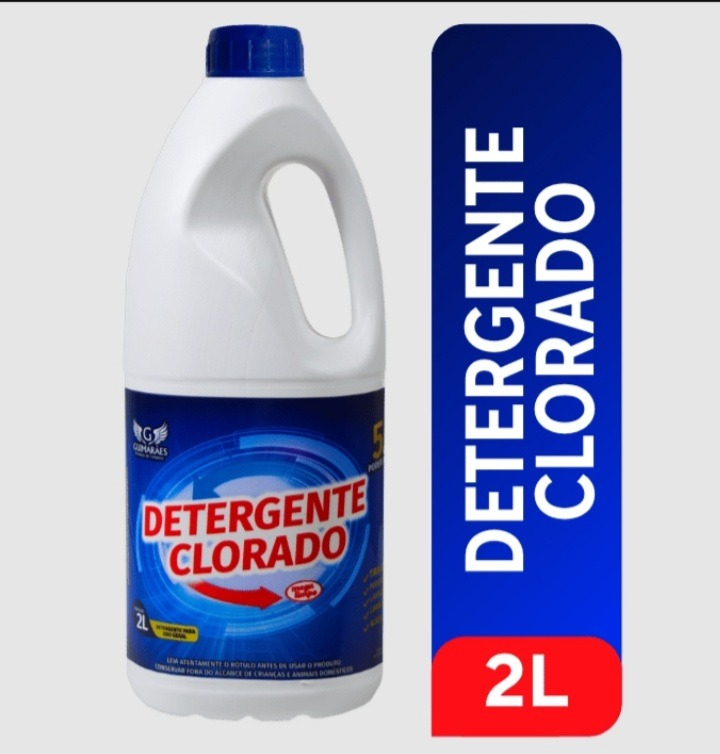

Limpeza geral
Detergente clorado · 2 L
Detergente clorado para a rotina de limpeza. Embalagem de 2 litros.
Saiba maisVer menos
Detergente clorado em embalagem de 2 litros. Uma opção da linha Guimarães para incluir na organização dos produtos de limpeza da sua casa ou empresa.
O DETERGENTE CLORADO MEGA LIMPO combina a ação do detergente (limpa sujeiras e gorduras) com o cloro (combate o mofo e bolor). Recomendado o uso deste produto na limpeza diária de banheiros, cozinhas e em ambientes úmidos. Este produto pode ser utilizado em qualquer tipo de piso e superfície lavável, inclusive na lavagem de roupas.
Consulte o preço
Comprar pelo WhatsApp